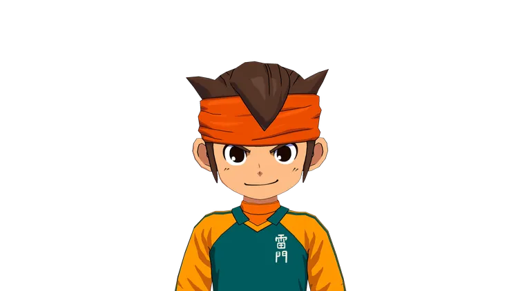
円堂守
他對足球的熱情無人能及。他意志堅定，無論遇到什麼困難都永不放棄。
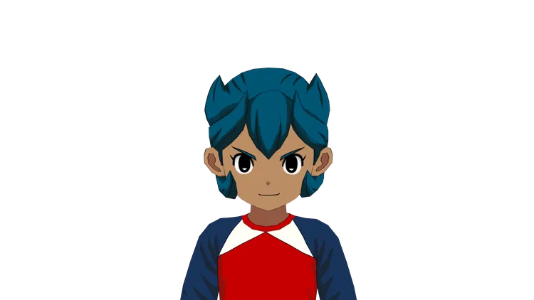
洛可可・烏魯帕
他是小巨人隊的隊長兼守門員。他成長於一個名為科托爾的國家的鄉村。
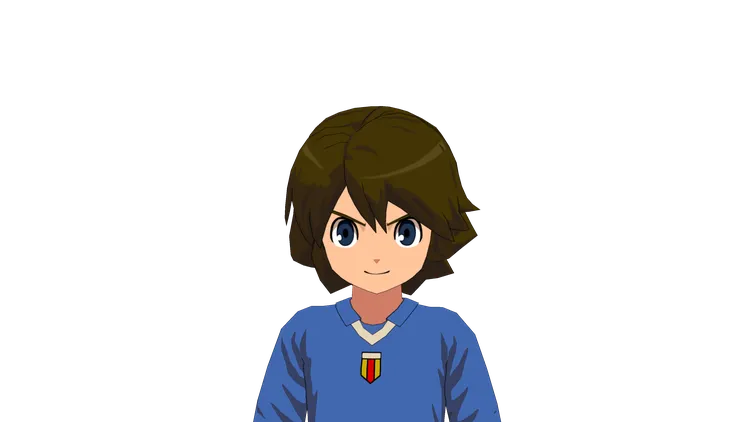
費狄歐・阿德納
吟遊詩人的副隊長。有著一頭棕色的短髮和深藍色的瞳孔。是歐洲最頂尖的球員之一，有著「白流星」的美名。
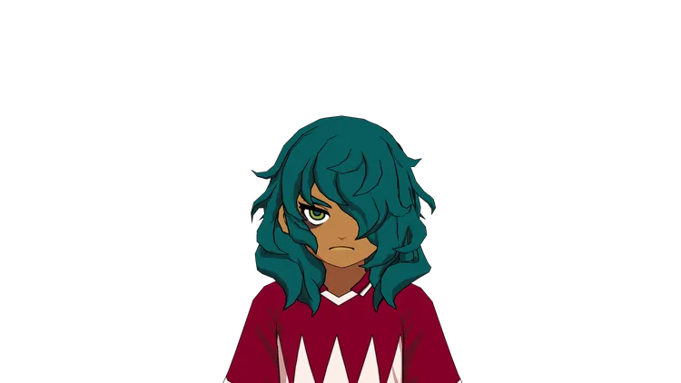
比翁．凱伊爾
他是沙漠雄獅隊的隊長，也是 後衛，身上帶著一絲神秘的氣息。
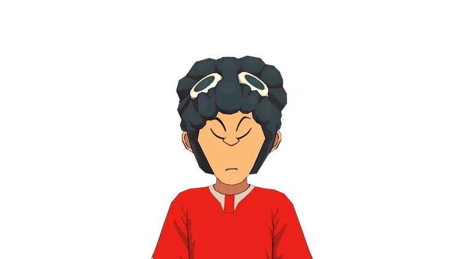
崔正秀
火焰神龍隊的隊長。一頭黑色的爆炸髮是他的特徵，喜歡用敬語而且眼睛經常閉著，只有豪炎寺及虎丸一起使出的猛虎風暴進球時才睜開眼睛。
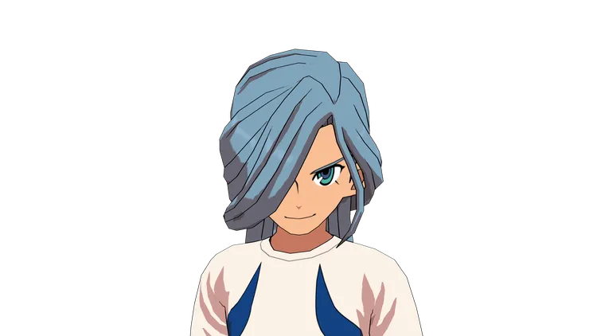
艾德卡．帕奇納斯
女王騎士的隊長。有著一頭水藍色的雙瞳與長髮，瀏海蓋住了右眼，後髮則將部份梳成馬尾、剩下則是披在背後。
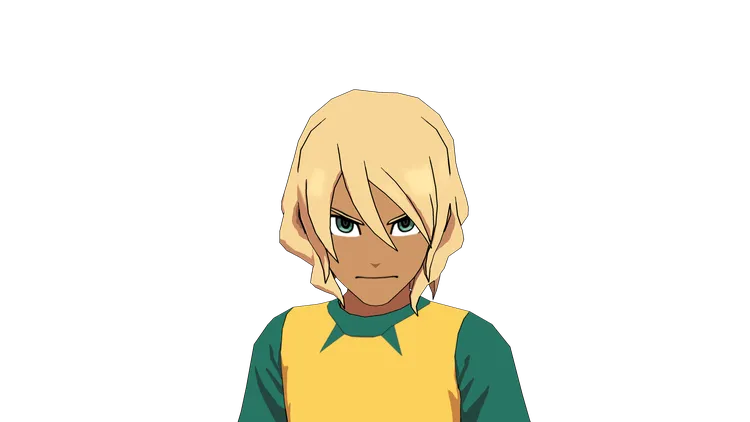
尼斯．多爾芬
蔚藍巨浪隊的隊長。有著褐色的肌膚、金色中長髮和綠色的瞳孔。個性溫和有禮、非常關心隊友的狀況。尼斯同時擔任隊中策劃戰略的角色。
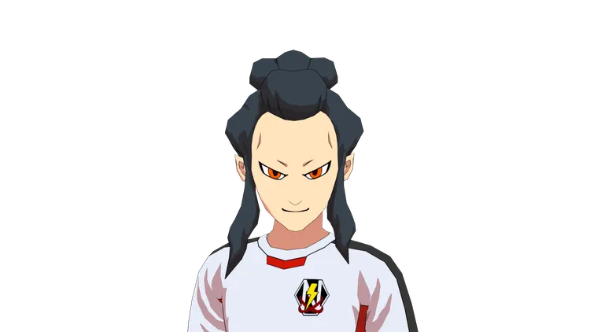
砂木沼治
新生日本隊隊長。教練為吉良瞳子，代表日本的候選隊伍。
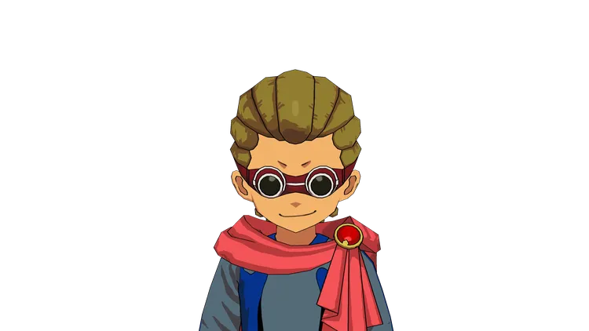
戴蒙尼歐·史特拉達
K隊的隊長。有著一頭棕色的頭髮並將其梳成雷鬼辮，帶著紅色的護目鏡。
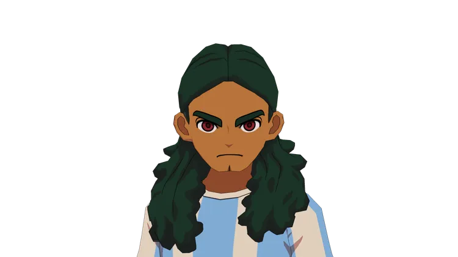
特雷司・多路耶
南美王者的隊長。有著一頭墨綠色的長捲髮和赤紅的雙眼、身型壯碩且手臂相當寬厚。
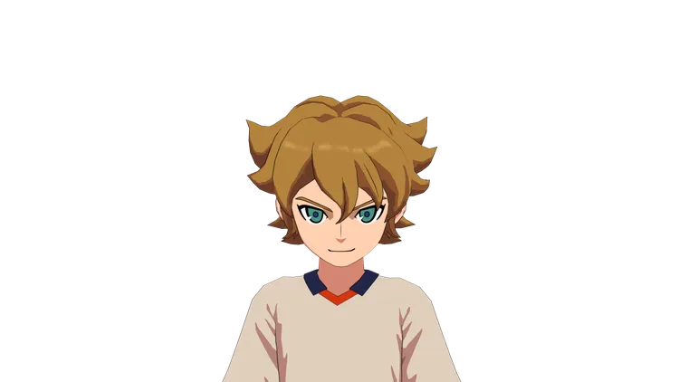
馬克・古爾格
獨角獸的隊長。有一頭金黃色的頭髮。是個能撐起球隊的王牌選手，與費狄歐、特雷司是老友關係。
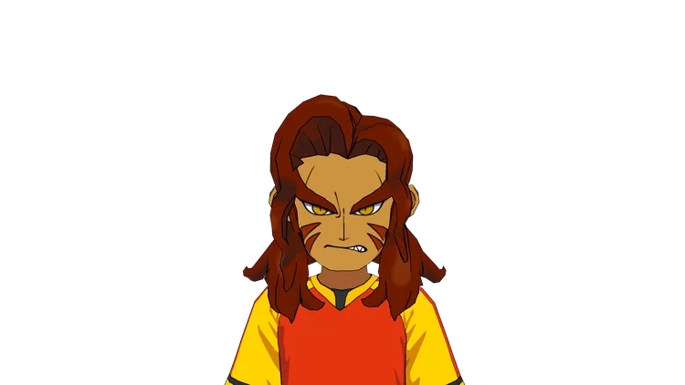
克拉爾多·納帕爾
紅色鬥牛士的隊長。從小就為了成為鬥牛士而努力特訓，動畫中為了提升彼此的實力而請求和閃電日本隊比賽。練習終了後和圓堂握手。
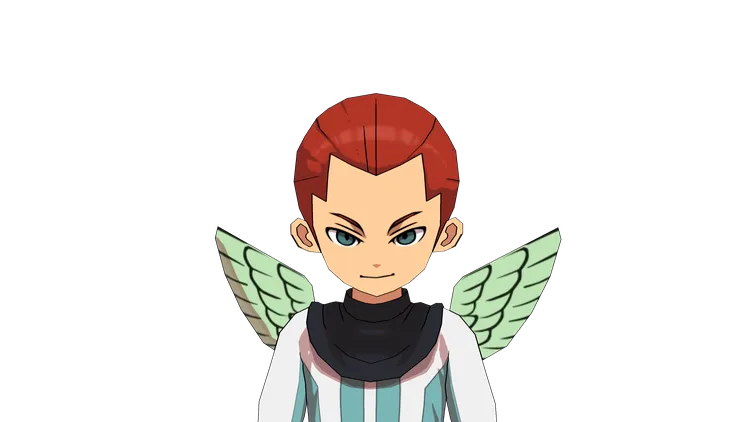
聖
天空使徒的隊長。綠眼，栗色長髮且綁成辮子。由於懷疑圓堂等人和魔界軍團Z有一定的關係，要對他們加以制裁然後逐出天界，動畫108話登場。
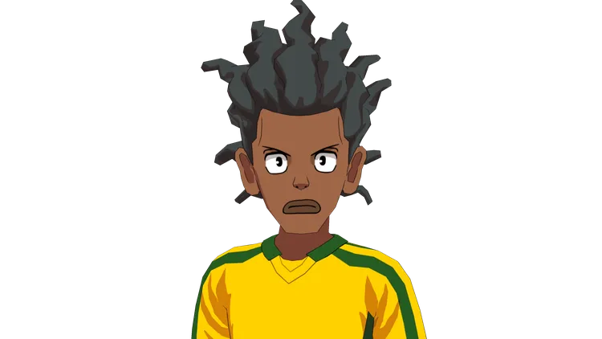
馬古・羅尼喬
足球帝國隊長。綽號「King of Fantasista（神奇球王）」。瘦長且有著褐色肌膚，辮子頭及厚嘴唇。通稱為「羅尼喬」。
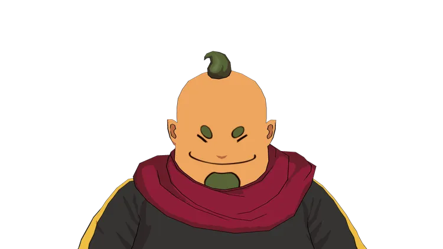
拉波克・韓克塔卡
賈爾席多隊隊長。為賈爾席多工作的謎之人物。體形有點胖，無論對誰都會使用敬語，經常露出大膽的笑容。
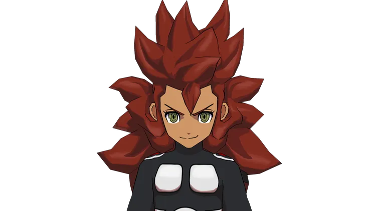
戴斯達
魔界軍團Z的隊長。將持有傳承之鑰的春奈當作祭品而將她抓到惡魔之門，準備將她獻給魔王。
雖然將鬼道等人逼到困境結果卻輸球。